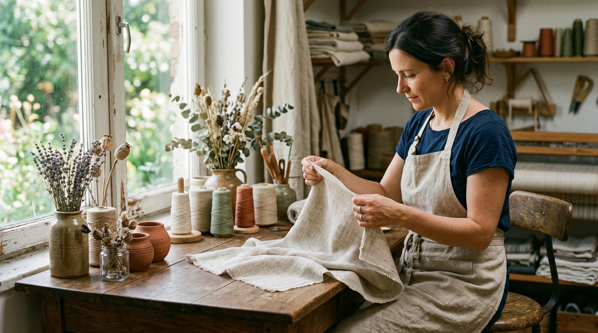
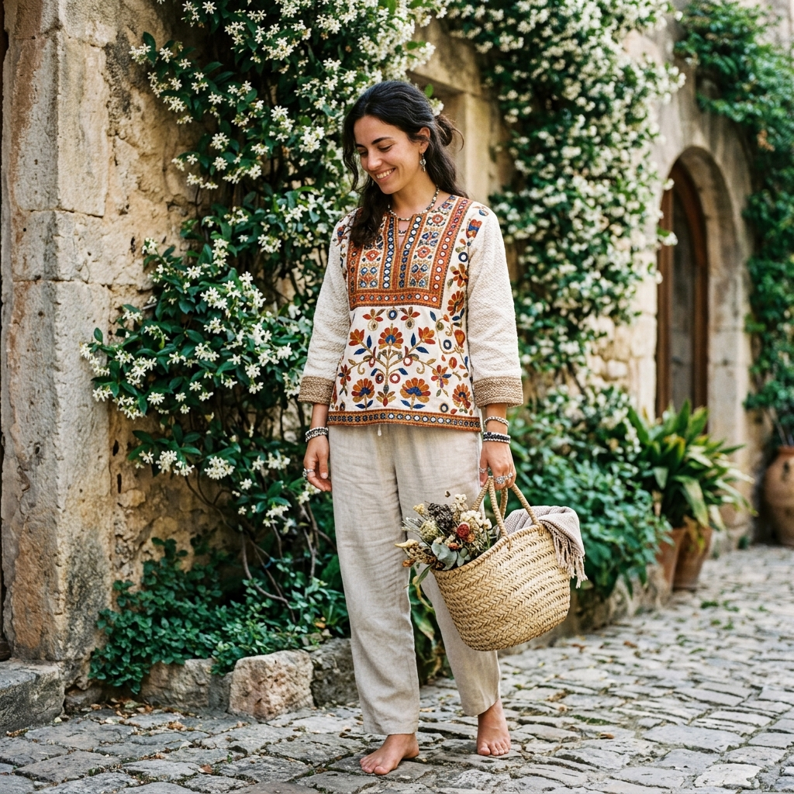

The Beginning
KIYA was born from a simple belief: that beautiful clothing should not cost the earth — literally or figuratively. We wanted to build something that honoured the traditions of Indian craft while making them accessible to women who value quality over quantity.
The name KIYA means "to do" in Sanskrit — an act of creation. Every piece in our collection is an act of creation: deliberate, considered, and made with hands that care about what they make.
We work with natural fibres — linen, organic cotton, handwoven cloth — and we partner with artisan communities who have practised their craft for generations. The result is clothing that carries history and intention in every thread.

What We Stand For
We believe the most beautiful things come from the earth. Our fabrics — linen, organic cotton, handwoven cloth — are chosen because they are alive: they breathe, they soften with age, and they return to the earth gracefully.
Every embroidered stitch, every block print, every mirror-work detail is made by skilled artisan hands. We believe in the beauty of imperfection — the slight variation that tells you a real person made this, with love and skill.
We design pieces you will reach for again and again, not pieces tied to a fleeting trend. KIYA clothing is meant to be worn, washed, loved, and kept — becoming more beautiful the more you live in it.
Our Commitment
Sustainability at KIYA is not a marketing claim — it is a set of choices we make every day, in every piece we create. We know we are not perfect, but we are constantly working towards better.
Every KIYA piece is made from natural materials — linen, organic cotton, or handwoven cloth. No synthetics. No microplastics.
We use plant-based and low-water dyeing processes wherever possible, reducing chemical impact on local waterways.
We work directly with artisan communities, ensuring fair wages and preserving traditional Indian craft techniques.
Our packaging uses recycled and biodegradable materials. We are working towards being completely plastic-free.
"Less waste. More meaning. We make what matters."
Every KIYA piece supports natural materials and artisan craft.
Shop the Collection